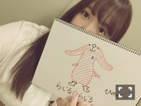
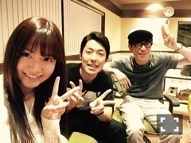

↓

イビツならじるくん
(ごめんねらじるくん！！！)
日曜の夜は、らじらー！サンデー
ゲストは星野みなみちゃんでした！
最近の趣味のこと、旅行のこと、
色んなことお話しできて
あとお絵描きできて充実した2時間でした！
みなみちゃんは来てくれるたびに
武器が増えてゆきますね。
みなみちゃんの声は
ひめも大好きなのですo(^o^)o
最後の「ばいばーい」可愛いかった！
番組終わっていつも反省会するんですが
スタッフさんが早速
次回みなみちゃん来てくれた時に
何の対決やるか提案してくれましたよ～～
次回の乃木坂回は6/4です！

チームらじらー！素敵や(´｡･v･｡｀)
3rdアルバム「生まれてから初めて見た夢」
もうすぐ発売ですね！
ユニット曲「ごめんね、スムージー」は
是非聴いて欲しいなと思いつつ
私的にはライブ映像もオススメ。
中元は一足お先に
アルバムゲットしたのですが
「不等号」が映像化されるのが
個人的に嬉しかった～～
～お知らせ～
雑誌
6/6 漫画アクション
6/6 TopYell 7月号
6/9 月刊Newtype 7月号
6/15 EX大衆 7月号
LIVE
7/1～ 乃木坂46真夏の全国ツアー2017
リリース
5/24 乃木坂46 3rdアルバム
「生まれてから初めて見た夢」
お洋服の好みが変わったかも。
この日の私服は
写メには写ってないけど
からし色のロングスカートがお気に入り。
最近は麻とか、リネンとか、
そういう素材のものが着てて落ち着きます
(＊´・ω・＊)